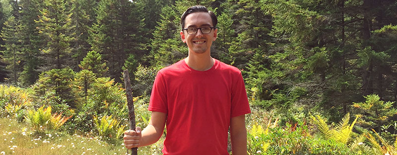

Artist & Web Developer from Chicago
Charlie Thomason is a Front-end Web Developer and Artist living in Chicago, Illinois. He is currently a Presentation Layer Engineer for Razorfish, where he specializes in responsive design, web accessibility, and rapid prototyping. As an Artist, he loves painting and photography — especially birds, landscapes, and movie-related themes. This website features a gallery his best artwork, a personal blog, and a store featuring his self-published book, Open Range: From Monument Valley to the Mojave Desert.